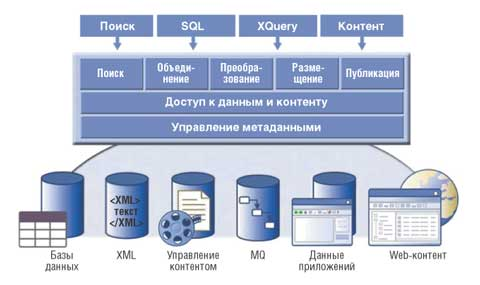

По материалам корпорации IBM (http://www.ibm.com/software/data/integration).
Основное направление софтверного бизнеса корпорации IBM (http://www.ibm.com) - ПО промежуточного слоя (middleware); отдельные ветви этого направления в той или иной мере нацелены на решение задач интеграции всех объектов и субъектов информационных систем: сотрудников, бизнес-процессов, систем, данных. И тем не менее при всем разнообразии аспектов интеграции одним из ключевых вопросов была и остается поддержка эффективной работы с информацией.
Многие продукты IBM так или иначе решают эту задачу, но все же особая роль отводится ПО WebSphere Information Integrator (WSII) 8.2. Ведь по мере замены "ручных" процессов электронными и интеграции процессов внутри предприятия компании обязательно сталкиваются с проблемами, связанными с поиском, доступом, интеграцией, синхронизацией и совместным использованием огромного количества информации. WSII как раз и обеспечивает организациям интегрированный доступ в реальном времени к любой бизнес-информации - структурированной и неструктурированной, хранящейся на мэйнфрейме и распределенной, общедоступной и конфиденциальной - в масштабах всего предприятия и за его пределами. Эта информация может содержаться в самых разных источниках - в базах данных Oracle, приложениях SAP, электронных таблицах Microsoft, хранилищах документов EMC, в неструктурированных файлах, в Интернете и группах новостей. Доступ к ней может быть организован через множество операционных сред - Microsoft Windows, Linux, Unix и IBM z/OS.
WSII предоставляет широкий диапазон возможностей в масштабе предприятия - поиск, объединение, преобразование, размещение данных (включая репликацию и кэширование), а также публикацию событий (см. рисунок). Это позволяет решать различные задачи интеграции, а также упростить интеграцию с лидирующими в отрасли аналитическими инструментами, ПО для поддержки порталов, прикладными пакетами, со средствами разработки приложений, промежуточным ПО, ориентированным на сообщения, с архитектурами, ориентированными на сервисы (service-oriented architectures, SOA), и с ПО для поддержки бизнес-процессов.
|  |
| IBM WebSphere Information Integrator предлагает единообразный способ работы с разнообразными источниками информации.
|
Благодаря этим возможностям приложения могут находить разнообразную распределенную информацию и получать доступ к ней так, будто она находится в едином источнике, независимо от ее физического местоположения. Можно отслеживать изменения информации и уведомлять об этом сотрудников или бизнес-процессы. Более того, администраторам станет проще распространять, объединять и синхронизировать информацию, чтобы способствовать интеграции приложений, поддерживать хранилища данных и цельность бизнеса в рамках сложных ИТ-сред, включающих множество платформ и систем разных поставщиков.
Редакции WebSphere Information Integrator версии 8.2Чтобы обеспечить гибкие возможности использования ПО WebSphere Information Integrator, продукт поставляется в восьми разных редакциях: Advanced Unlimited, Advanced, Standard, Replication, Event Publisher, Developer, OmniFind, Content для платформ Linux, Unix и Windows. Имеется также пять дополнительных редакций для платформы IBM zSeries.
|
Преимущества
Благодаря WSII можно объединять, казалось бы, несопоставимые данные. Например, разработчики могут использовать знакомые им SQL-запросы, чтобы сопоставлять и объединять информацию о клиентах из базы данных IBM DB2, с изображениями заявок клиентов из репозитория FileNet, с информацией о состоянии счетов клиентов из базы данных IBM IMS, а также с контактной информацией о клиентах из приложения Siebel.
Согласно данным собственных исследований IBM, объединение несопоставимых источников данных обеспечивает сокращение программного кода на 40-65%, а также сокращает время разработки в два раза. Программисты могут применять стандартные SQL-запросы для доступа к текущим и историческим данным, для слияния или объединения несопоставимых данных и составления документов на XML - и все это в привычной среде разработки, используя средства поддержки порталов и инструменты для составления отчетов.
В случае приложений, насыщенных контентом, WSII можно использовать для интеграции множества хранилищ. В другом варианте организации могут просто предоставлять контент для приложений, встраивая предопределенные функциональные Web-компоненты в существующие пакеты или клиентские приложения. Более того, компании, имеющие одновременно несколько систем документооборота, могут создать общий вход для рабочих элементов или сконфигурировать бизнес-правила таким образом, чтобы переключать потоки документов между несопоставимыми системами при возникновении определенных событий.
WSII включает также функции анализа в реальном времени и позволяет составлять отчеты с использованием распределенных источников, например, объединять финансовые данные из разных подразделений или объединять данные и контент новыми способами.
Данное ПО может также взаимодействовать с дополняющими технологиями интеграции, такими, как технология извлечения, преобразования и загрузки данных (extract, transform and load, ETL), ПО middleware, ориентированное на сообщения, приложения поддержки бизнес-процессов и т. д.
Функциональность
Поиск в масштабах предприятия
Поиск - фундаментальная возможность информационной инфраструктуры, которая обеспечивает оптимальный доступ к текстам и другой неструктурированной информации, составляющей до 85% всех данных на предприятии. WSII предоставляет качественное, масштабируемое и защищенное средство текстового поиска, которое дает релевантные результаты, обеспечивая время ответа менее 1 с при поиске корпоративной информации, независимо от того, где находятся данные - на Web-сайтах, в реляционных базах данных, в различных файловых системах, группах новостей, порталах, в общих системах, приложениях или в системах управления контентом. Администраторы могут постоянно вести мониторинг поисковой активности и видеть данные по производительности, охвату, ошибкам, скоростям запросов, времени ответа, самым популярным и последним запросам.
Поиск реализуется с помощью защищенных Java-приложений, поэтому конфиденциальная информация не видна неавторизованным пользователям. Кроме того, поиск в масштабах предприятия организован таким образом, чтобы обеспечить уровень масштабирования, необходимый для поддержки миллионов документов и тысяч пользователей. К примеру, в корпоративной интрасети корпорации IBM WSII обеспечивает выполнение 80 тыс. запросов в день, просматривая около 7 млн уникальных страниц.
Спектр функций поиска в WSII 8.2 включает следующие возможности.
Современные возможности ранжирования. При просмотре подходящих документов учитывается множество факторов, и факторы даже по-разному взвешиваются в зависимости от типа введенного запроса. WSII распознает различные типы запросов и анализирует их, чтобы обеспечить существенные и отфильтрованные результаты.
Многоязыковая поддержка. Система поиска анализирует проиндексированный текст документов, определяет его язык и анализирует текст, используя высокоинтеллектуальную лингвистическую обработку с учетом специфики языка. Поддерживается около 50 языков, для двадцати из них предусмотрен детальный лингвистический анализ.
Параметрический поиск. Поддерживается также поиск по диапазону числовых величин: можно, например, задать поиск цены от 10 до 20 долл. или на дату позже заданной.
Классификация. Это позволяет находить связанные группы информации на основе правил и поддерживает инвестиции в систему IBM WebSphere Portal.
Динамическое резюме. Термины запроса выделяются в результатах поиска, WSII динамически генерирует резюме для каждого документа, включенного в результаты поиска.
В отличие от Интернет-поиска, для поиска в масштабах предприятия используются разные технологии, определяющие актуальность документов, необходимость нескольких уровней безопасности и моделей доступа, а также удовлетворяющие разные потребности пользователей. Даже самые успешные технологии поиска в Интернете, такие, как ранжирование страниц, не могут обеспечить оптимальный поиск в масштабах предприятия, когда документы обычно не связаны между собой. Чтобы учесть специфику среды предприятия, в WSII введены инновационные технологии индексации и выдачи информации.
Объединение
Средства объединения в WSII позволяют приложениям работать с разнотипной информацией, представляя ее в виде единого ресурса, но не нарушая при этом автономности и целостности источников данных и контента. WSII предлагает две дополняющие друг друга возможности объединения: одна основана на парадигме стандартного в отрасли SQL-доступа, вторая использует программный механизм API. Стандартные возможности объединения, реализованные в системе, кратко описаны ниже.
WSII - это гетерогенная система, которая обеспечивает объединенный доступ к существенно разным типам данных и контента. Она позволяет скрыть различия, идиосинкразию и реализацию нижележащих источников информации от пользователя, т. е. рассматривать их как единый ресурс.
WSII - это расширяемая система. Инструментальные средства разработчика и администратора предназначены для того, чтобы минимизировать усилия для интеграции новых источников, а также обеспечить гибкость, которая необходима для получения информации, требуемой для оптимизации запросов.
WSII предоставляет множество функций. Объединение на базе SQL включает стандартные SQL-функции, замену отсутствующих функций для серверных источников, возможность использовать уникальные функции обработки источников и дополнительные полезные возможности, присутствующие в исходных системах. Объединение, ориентированное на контент, включает полный набор двунаправленных операций, а также полезные функции, такие, как единый пароль, функции администратора безопасности и объединенный поиск.
WSII использует автономные источники информации, поэтому они не влияют на существующие приложения.
Высокая производительность WSII позволяет выполнять объединенный запрос в реальном времени. Объединенные запросы на базе SQL применяют распределенную оптимизацию запросов, основанную на затратах, параллельное выполнение и предсказание, доступ к исходным источникам данных и прозрачное кэширование. Объединение, ориентированное на контент, менее критично к производительности и позволяет применять исходные интерфейсы хранилищ данных.
Используя механизмы SQL, ODBC и JDBC, WSII предоставляет информацию аналитическим средствам и системам построения отчетов, средам разработки, порталам, средствам извлечения, преобразования и загрузки данных, а также другим стандартным компонентам ИТ-инфраструктуры. SQL-запросы в сервис-ориентированной архитектуре могут автоматически преобразовываться в Web-запросы. Есть и другой вариант: результирующие наборы данных могут формироваться в виде XML-документов, которые проверяются и публикуются как результат одного SQL-запроса.
Через SQL-запросы доступен широкий спектр источников данных: популярные реляционные базы данных, источники ODBC, базы данных на мэйнфреймах (через средство WebSphere Information Integrator Classic Federation), пакеты бизнес-программ (через средство IBM WebSphere Business Integration Adapters), источники контента (через средство WebSphere Information Integrator Content Edition), различные научные источники, а также запросы сообщений WebSphere MQ, Microsoft Excel, табличные текстовые файлы, XML-документы, источники данных, доступные через OLE DB и Web-сервисы. Инструментарии разработчика для C++ и Java позволяют получить доступ к другим источникам данных.
В соответствии с отраслевыми исследованиями более 85% бизнес-информации относится к неструктурированной - она хранится в виде больших объектов (документы, почтовые сообщения, изображения и отчеты). WSII через ориентированный на контент набор API позволяет компаниям объединять доступ к хранимому контенту через множество несовместимых хранилищ, предоставляя единый совместимый интерфейс к множеству систем.
Как и в случае объединения на базе SQL, реализации, использующие этот метод, могут получать доступ к таким хранилищам и системам, управлять ими и работать таким образом, как будто эти данные хранятся и управляются в одном унифицированном хранилище. Набор API поддерживает стандартные функции обслуживания библиотек, такие, как отметки о записи или чтении данных, создание версий и аннотаций, а также дополнительные сервисы объединения - преобразование метаданных, объединенный поиск и единый пароль. Более того, интеграция бизнес-процессов обеспечивается возможностью мониторинга событий в домене контента.
В стандартном варианте поддерживается множество средств управления контентом (от IBM, Documentum, FileNet, Microsoft, Hummingbird и других поставщиков). Кроме того, инструментарий разработчика Java позволяет разрабатывать, конфигурировать и внедрять коннекторы для дополнительных коммерческих и самостоятельно разработанных хранилищ.
Преобразование
Возможность преобразования данных должна присутствовать в любых интеграционных предложениях - в спецификации взаимообмена XML, в вычислении ключевых показателей эффективности или в сложных расчетах для визуализации. WSII предлагает богатый набор функций для выполнения таких операций.
Для основных преобразований типов данных, соответствующих сложным аналитическим вычислениям, стандартный SQL предоставляет широкий набор функций преобразования, включая манипуляцию строками, арифметические вычисления, статистические вычисления, функции интерактивной аналитики, а также процедурную логику. Функции, зависящие от типа (например, вычислительные алгоритмы или запросы на схожесть химических свойств), в будущем расширят этот набор преобразований.
Трансляция на расширяемый язык стилей (XSL) обеспечивает возможность обмена документами и соответствие динамическим стилям для отображения на несовместимых дисплеях. Функции, определенные пользователем, позволяют стандартизовать практически любые действия для всех типов данных. Хранимые процедуры могут инкапсулировать бизнес-логику для преобразования данных и автоматически вызываться во время процесса репликации. Кроме того, возможность доступа к Web-сервисам как встроенная функция означает, что любой Web-сервис (например, преобразование курсов валют) становится встроенной функцией преобразования данных. Наконец, форматы контента можно автоматически преобразовывать в формат, читаемый браузером.
Размещение данных
Существуют два типа размещения данных - репликация и кэширование.
Репликация помогает администраторам распространять, объединять и синхронизировать информацию в сложных, мультиплатформенных, неоднородных вычислительных средах. WSII использует средства репликации, основанные как на запросах, так и на SQL. Репликация используется в самых разных вариантах применения.
- Поддержка интеграции приложений: независимо от того, используется двухточечная или распределенная топология распределения и консолидации, WSII позволяет управлять данными, которые хранятся в разных прикладных доменах. Например, розничный торговец может отправлять данные о продажах из магазина на корпоративный сервер, а данные складского учета могут отправляться с сервера в магазины.
- Поддержка хранилищ данных: с помощью WSII можно использовать текущую информацию, отслеживать изменения в оперативных базах данных и переносить их в основные хранилища, чтобы обеспечить работу информационных ресурсов предприятия в реальном времени.
- Поддержка непрерывности бизнеса: WSII обеспечивает синхронизацию локальных и удаленных систем резервного копирования как в резервном, так и в оперативном режиме.
Администраторы могут использовать графический интерфейс, командную строку, а также скрипты для конфигурирования множества топологий, задержек и характеристик взаимодействия для архитектур репликации, построенных как на основе запросов, так и на SQL. Интегрированные функции мониторинга и синхронизации помогают оперативно реагировать на проблемы и выполнять предупреждающее управление работоспособностью среды.
Репликация, основанная на запросах, обеспечивает малые задержки и возможность массовой репликации с управляемым обнаружением и разрешением конфликтов. Этот вид размещения данных предназначен для того, чтобы поддерживать непрерывность бизнеса, распределение загрузки и сценарии интеграции приложений.
Подтвержденные изменения выбираются из журнала базы данных и помещаются в очередь сообщений WebSphere MQ. Надежный механизм определяет взаимосвязь транзакций и заменяет транзакции в управляемых системах, чтобы добиться максимального параллелизма и сократить время задержки. Богатый выбор алгоритмов обнаружения и разрешения конфликтов позволяет выявить конфликты в равнозначных системах и обеспечить продуктивную работу систем резервного копирования, а также распределить рабочую нагрузку по нескольким серверам. Кроме того, можно фильтровать данные, чтобы репликация охватывала только необходимые данные. Для выполнения преобразований данных можно использовать хранимые процедуры. Автоматические возможности загрузки позволяют одновременно выполнять загрузку и репликацию данных.
Репликация, основанная на SQL. Чтобы обеспечить репликацию данных для баз данных разных производителей, в WSII реализована архитектура, основанная на SQL. Это позволяет добиться максимальной гибкости управления планированием, преобразованием и распространением данных в обслуживаемых хранилищах данных, обеспечить поддержку соответствия данных между несовместимыми приложениями, эффективно управлять сценариями распространения и консолидации данных между центральным офисом и филиалами, а также централизованными конфигурациями.
В этом режиме WSII отслеживает изменения как на основе анализа журналов, так и на основе событий, и вносит их в промежуточную реляционную таблицу. Процесс утверждения читает данные из промежуточной таблицы и управляет обновлениями во всех управляемых системах.
Данные распространяются или консолидируются через сервер репликации. Перемещение данных может быть непрерывным, может управляться событиями или автоматически (по заданному графику либо по заданным интервалам времени). Как и в случае репликации на основе запросов, возможна фильтрация данных таким образом, что будут задействованы только необходимые данные. Более того, для преобразований можно использовать стандартные выражения SQL и хранимые процедуры, а управление перемещаемыми данными осуществлять в пакетном режиме, чтобы обеспечить непрерывную доступность данных.
Кэширование. WSII предоставляет функции кэширования как другой вид интегрированного и прозрачного размещения данных. Администраторы могут определить данные и контент для кэширования из любой объединенной информации с помощью таблиц материализованных запросов (materialized query tables, MQT), чтобы оптимизировать способность запросов к реагированию и доступность данных в режиме чтения. Инструментальная инфраструктура обеспечивает кэширование отдельных удаленных таблиц или подмножеств таких таблиц, а также конфигурирование необходимых процессов репликации для обновления локальной кэш-памяти.
Имеются также полезные опции для определения и управления локальной кэш-памятью. Например, информацию о самых важных клиентах можно поместить в кэш-память, и она будет быстро распространяться по корпоративным порталам.
Публикация событий
WSII позволяет связать события, относящиеся к данным, и бизнес-процессы, отслеживая изменения баз данных или читая журнал базы данных. Затем эти изменения преобразуются в сообщения XML и публикуются в WebSphere MQ. Любое приложение или сервис, интегрированный с WebSphere MQ напрямую или через сервис сообщений Java (Java Message Service, JMS), может асинхронно принимать изменения данных по мере их поступления. Например, с помощью функции публикации событий WSII получает изменения в базе данных DB2 UDB по мере их возникновения и автоматически обновляет приложение SAP. Точно так же приложение или сервис на базе JMS, работающие на любом J2EE-сервере, могут получать те же изменения и выполнять дополнительные процедуры или проводить интеграцию. И, наконец, решения для публикации событий в WSII позволяют гибко форматировать сообщения и фильтровать изменения различными способами.
С помощью изменений базы данных в решениях для публикации событий WSII можно запускать бизнес-процессы. Например, уменьшение количества продукции на складе может инициировать новый заказ, а появление нового клиента - вызвать отправку ему приглашающего электронного письма, проверку его кредита и обновление информации о клиенте. Таким образом, образуется независимая от приложений, слабосвязанная интеграция, которая в высокой степени адаптируется к изменениям среды приложений. Например, при том что на уменьшение количества определенной продукции могут влиять различные приложения, имеется единственная точка интеграции - сами данные, которые и управляют процессом. Изменения приложений, влияющих на изменение количества продукции на складе, никак не сказываются на интеграции, основанной на событиях.
Компании могут ускорить выход своей продукции на рынок благодаря интеграции, которая позволяет отслеживать событие в одном месте. Это более стабильный вариант по сравнению с теми типами интеграции, когда приходится выполнять мониторинг множества приложений для отслеживания события.
Кроме того, публикация событий WSII может привнести изменения в инструментарий технологии ETL и клиентских процессов, чтобы обновлять оперативные хранилища данных и минимизировать потребности в пропускной способности, а также обеспечить более полную синхронизацию баз-приемников.
И, наконец, публикация событий WSII позволяет получать доступ к хранилищам контента благодаря объединению на основе контента. Обработчики клиентских событий и другие виды поведения на базе правил могут охватывать множество хранилищ контента и документов. Например, один и тот же журнал событий может служить для централизованного аудита в поддержку различных инициатив соответствия законодательству, а также для распространения контента по мере изменения в соответствии с правилами синхронизации.
Основные варианты применения
Функциональные возможности WSII позволяют решать широкий круг задач, связанных с поддержкой интеллектуальных ресурсов предприятия, интеграцией бизнеса и ведением порталов.
Повышение уровня интеллектуальных ресурсов предприятия обеспечивается благодаря следующим ключевым возможностям:
- увеличение степени полезного применения имеющихся хранилищ данных благодаря прозрачному доступу в реальном времени к оперативным и историческим данным и контенту;
- быстрое построение прототипов и тестирование при срочных разработках;
- содействие исследованиям и обмену информацией благодаря интегрированному доступу к информации по всему предприятию и за его пределами;
- поддержка важнейших инициатив, направленных на соответствие законам и директивам, благодаря функциям поиска, доступа и сопоставления информации, полученной из разных источников;
- составление отчетов, включающих данные по множеству подразделений (что необходимо при слиянии и приобретении компаний), благодаря прозрачной интеграции информации от несовместимых ИТ-инфраструктур и хранилищ данных;
- улучшение поддержки принятия решений благодаря поступлению информации в хранилища данных в реальном времени.
Для расширения интеграции бизнеса существует несколько интегральных способов:
- формирование представлений клиентов и продукции в масштабе предприятия с целью повысить производительность труда бизнес-пользователей;
- содействие управлению бизнесом благодаря быстрому и простому доступу к оперативной и исторической информации и контенту;
- повышение эффективности отраслевых приложений благодаря единому интерфейсу для доступа к информации вместо применения "двухточечной" интеграции;
- облегчение преобразования процессов и перехода на новые системы благодаря прозрачному доступу к существующим и новым системам;
- управление целостностью, распространением и консолидацией данных между различными приложениями благодаря мощным и гибким функциям размещения данных;
- запуск бизнес-процессов путем публикации событий баз данных и создания адаптивной среды интеграции.
WSII также позволяет расширить функционирование порталов, поддерживая их развертывание и упрощая работу с ними.
Поддержка развертывания. По своей природе порталы служат "окнами" для связи с различными приложениями и информационными областями. WSII помогает пользователям в поиске необходимого корпоративного контента, а разработчикам - в создании интегрированных представлений разнородного контента. Поисковые средства WSII могут заменить встроенные функции поиска, имеющиеся в портале, предоставляя более широкий доступ к контенту, масштабируемые реализации и богатые возможности анализа текстов. Таким образом, результаты поиска содержат больше информации, чем при использовании встроенных возможностей поиска.
Снижение сложности. Разработчики порталов сталкиваются с проблемами при организации доступа и сопоставления широкого диапазона источников информации - как для данных, так и для контента, для получения правильного результата в условиях увеличения сложности приложений и повышения требований бизнеса. WSII позволяет разработчикам организовать доступ и объединять разнородную информацию более производительно и эффективно. При этом объем кода, написанного вручную, и время разработки сокращаются практически в два раза. Кроме того, это ПО включает стандартные инфраструктуры для разработки порталов и приложений, чтобы максимизировать повторное использование инструментов и знаний. Более того, WSII выступает как абстрактный уровень, устраняя необходимость в изменении портала при изменении структуры нижележащих данных и контента.